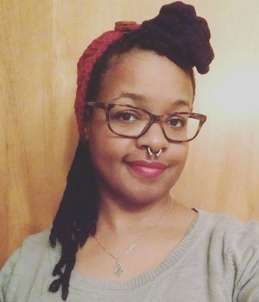

Jenna's World of Wonders
Hello everypony! My name is Jenna and I'm from Columbus, OH. I'm a huge geek-the level of my geekdom surpasses Godzilla's stature. The main things I geek out about are My Little Pony: Friendship is Magic, Star Wars, Anime, gaming, and comics. I got my degree in Linguistics and am currently attending Dev Bootcamp, but my passion lies with studying how my body aligns with my couch... A quirky fact about me that you can tell your friends? I used to do two of the coolest sports ever: fencing and roller derby. Want to know more? Contact me!
